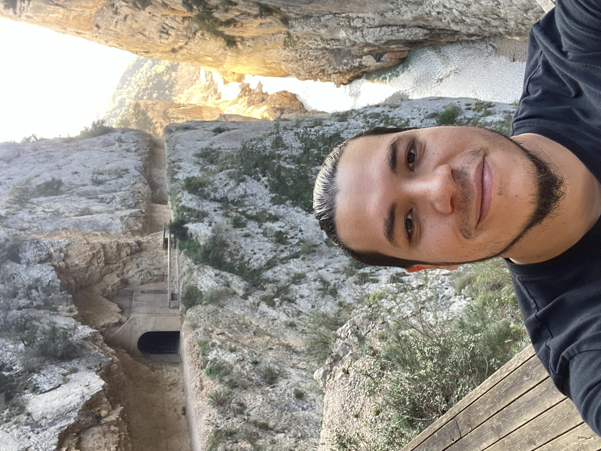
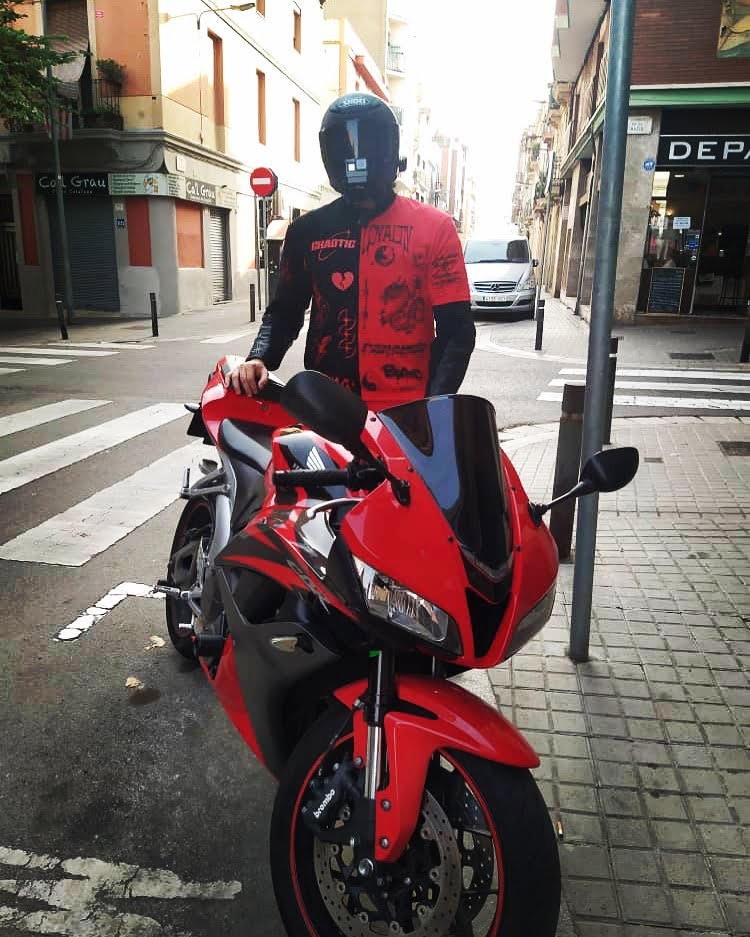

Soy Tito
Mi nombre es Jesús Fajardo, pero mis amigos me llaman "Tito". Recido
en Barcelona, Epaña.

Estoy comenzando mi nueva aventura en convertirme en un programador.
Esta es mi primera web, en la que hablaré sobre mi, mis gustos, mis
pasiones y mis sueños
Mis gustos

Mis gustos principalmente vienen de las emociones altas, como
videojuegos shooters, buena musica metal, preferiblemente en vivo,
deportes extremos y otros entornos en los que salimos de nuestra zona
de confort. Me gusta sentir adrenalina al momento de divertirme y a
pesar de ser peligroso, es lo que me hace sentir vivo. Me crié en un
entorno un poco peligroso debido a la inseguridad de mi ciudad natal.
Esto me ha llevado a manejar situaciones extremas, al mismo tiempo, me
he acostumbrado a sentir adrenalina en mi vida cotidiana.